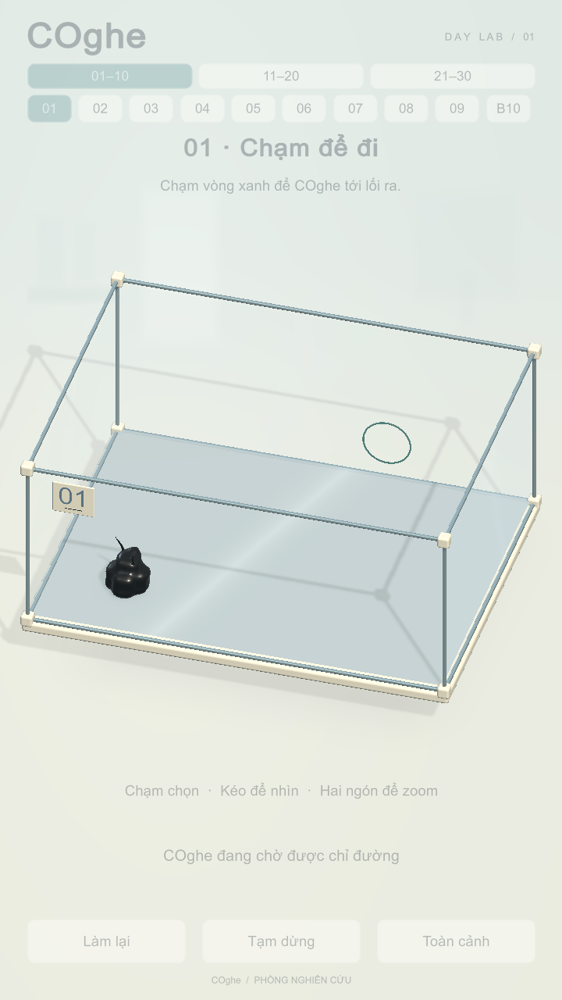
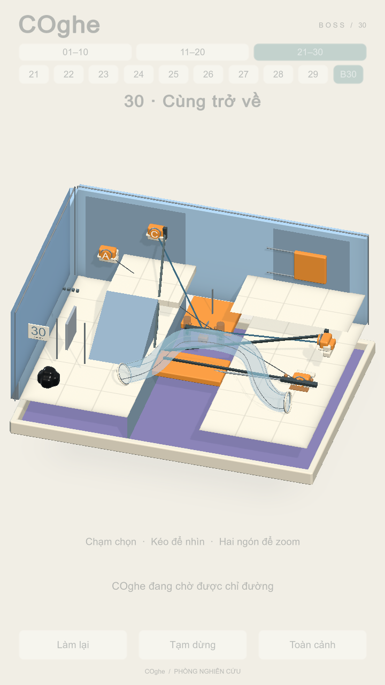

COghe · Nhãn mẫu vật
Phương án C đã chọn cho màn mẫu 01. Bảng nhựa màu ngà áp trực tiếp lên kính ở góc trên trái, số xanh xám và gạch nhỏ như concept Day Lab gốc. Nhãn số tương ứng đã có trong cả 30 màn V2.

Màn 1 — C, bảng số áp lên mặt kính. Ảnh bản Mac chạy thật.
Màn 30 — nhãn hai chữ số. Phần art còn lại giữ nguyên; ảnh bản Mac chạy thật.HUD mờ ở ảnh native vì lượt replay tự động khóa nút. Bản chơi bình thường dùng HUD như cũ. Các nút A/B/C đã ẩn.
Bản Mac: Builds/GlassLab/macOS/COghe.app · Kết quả kiểm tra